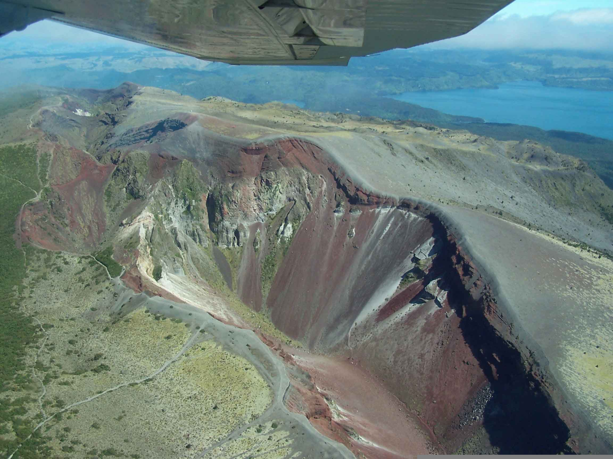

Mount Tarawera
Rotorua Tourist Location
One of Rotorua's Inactive Volcanoes!
Mount Tarawera is a famous volcanic mountain located near Rotorua and
is one of the region's most recognisable natural landmarks. The mountain
is known for its unique landscape, colourful rock formations, and
dramatic volcanic history. Its eruption in 1886 was one of the most
significant volcanic events in New Zealand's history and changed the
surrounding landscape.
Today, Mount Tarawera is a popular destination for visitors interested
in nature, adventure, and New Zealand's volcanic history. Visitors can
explore the mountain through guided tours, which provide opportunities
to learn about its history, experience the volcanic landscape, and enjoy
views of the surrounding Rotorua region.
The area is particularly suited to adventurous visitors who want to
experience something different from Rotorua's more traditional tourist
attractions. Tour prices can vary depending on the activities and
packages selected, so visitors should check costs before booking.
Facts:
- Located near Rotorua
- Inactive volcanic mountain
- Known for its dramatic volcanic landscape
- Guided tours are available
Costs:
- Guided tours: approximately $150-$300 per person
- Prices vary depending on the tour package
- Transport costs may apply